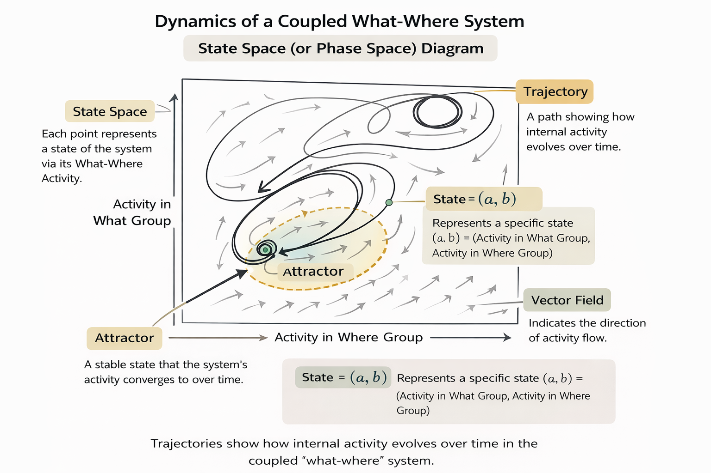

Chapter 6 extends dynamic pattern formation to cognition. The question shifts from how limbs coordinate or how neural populations select functional groups to how organisms come to know things. Thelen and Smith argue that categorization is the primitive of mental life, and that its ontogeny follows the same processes that govern motor coordination and neural organization. Knowledge is not a thing stored in the mind but a process unfolding in time.
The Failure of Objectivist Categories
The chapter opens by dismantling the objectivist approach to categorization. In this tradition, concepts are internal representations that mirror external reality; the mind discovers pre-existing categorical structure. Piaget's constructivism retained this logic: development builds an internal model that progressively matches the world's structure.
The classic view defines category membership through necessary and sufficient features. Rosch's (1973) finding that people judge some members as better instances than others forced a shift to probabilistic models. Yet graded structure itself proves unstable. Armstrong, Gleitman, and Gleitman (1983) demonstrated that even categories with unambiguous definitions, such as "triangle," produce graded judgments; people recognize equilateral triangles faster than scalene ones despite knowing the definition. Barsalou (1987) showed that ad hoc categories created on the fly produce the same graded-structure effects, even though no stable internal representation exists for them.
The objectivist response was to retreat toward essentialism. People's intuitions about parenthood (a blue, hairless animal is a skunk if its mother is a skunk) suggested that perceptual properties are peripheral to "true" category structure. This effectively divorced perception from concepts. Thelen and Smith identify this as a fatal concession: perception falls outside conceptual explanation only if knowledge exists apart from performance, and if the dynamics of acquisition are severed from the processes of use.
Biological Categories and Degeneracy
Against this framework, the chapter advances Lakoff's (1987) argument that cognition is embodied. Lakoff's analysis of "mother" illustrates the degeneracy of human concepts. No single definition captures the concept; the birth model, genetic model, nurturance model, marital model, and genealogical model overlap without cohering. People can call different women their "real mother" depending on which model they invoke. This degeneracy is not a limitation but the source of conceptual flexibility. Imagination requires variability; creativity requires the instability of biological categorization.
Self-Organizing Categories: Reeke and Edelman's Model
The chapter's demonstration proof comes from Reeke and Edelman's (1984) computer simulation. Their device learns to recognize alphabetic letters without an external teacher, without feedback, and without pre-specified templates.
The architecture is built on degeneracy: two disjunctive processes simultaneously sample the same stimulus. A feature analysis system extracts angles, lines, curves, and orientations. A shape tracing system extracts global form through motor action. These heterogeneous processes are coupled through a reentrant map correlating their outputs at every step in real time. Two further mechanisms drive learning: a motivational value (the tracer seeks activity) and selectionist retention of active connections.
See Figure 6.2 in Thelen & Smith (1994, p. 169): Reeke and Edelman's model, two disjunctive processes (feature mapping and shape tracing) coupled through a reentrant map.
No component contains a definition of "A." The intelligence resides in the pattern of activity across the whole system.
Freyd's (1983) data support a prediction of this model: that dynamic motor experience shapes static visual category boundaries. Subjects who observed a character drawn by one method recognized distortions consistent with that method faster than equivalent distortions from the alternative method. Static features that mattered for category membership were influenced by how those features were produced in real time.
Three implications follow. Categories self-organize from multimodal experience without instruction or innate templates; the dichotomy between innate and arbitrary is false. No represented concept is stored anywhere; categories are bursts of synchronized activity, inherently variable. Degeneracy means there is no single answer to how we recognize a category instance.
Dynamic Representations and Object Segregation
The chapter applies these principles to how infants perceive distinct objects. Spelke's research showed that young infants do not use static gestalt properties to segregate objects; static cues become functional between 7 and 30 months. What young infants use is motion. Kellman and Spelke (1983) demonstrated that 4-month-olds perceive a rod behind an occluding box as unitary only when the rod ends move together.
Thelen and Smith propose that two disjunctive perceptual systems (a "what" system processing static features, a "where" system processing movement) are coupled through a reentrant map. Their joint activity traces continuous trajectories through a state space.

Repeated experience causes certain trajectories to recur. Through Hebbian strengthening, commonly repeated paths become attractors. Surprise in habituation paradigms results when a trajectory initially falls on an established attractor but then departs. The broken rod produces a trajectory that repeatedly overlaps with and veers from the habituating trajectory; the solid rod remains captured by it.
Thelen and Smith are candid that this account is speculative. They advance it because it introduces knowledge as time-locked trajectories of heterogeneous activity and demonstrates that knowledge need not be a static mental model. The account dissolves the competence-performance distinction. Competence is context-specific knowledge.
Evolving Attractors and Developmental Change
Figure 6.10 illustrates the mechanism for how generalized knowledge emerges from specific experiences. The state space begins with shallow, transient trajectory patterns. With continuous experience, repeated patterns deepen into stable attractors that begin to capture formerly distinct trajectories.
See Figure 6.10 in Thelen & Smith (1994, p. 179): Evolving attractors with experience. Top: early state space. Middle: attractors forming at ~4 months. Bottom: experimental experience interpreted by prior history.
Early in development, three different objects moving in the same manner may generate distinct trajectories. With continued experience of symmetrical, uniformly colored objects moving as wholes, a single deep attractor develops that captures these formerly distinct trajectories. This attractor is the concept of a unitary, bounded object.
Static cues emerge developmentally because attracting trajectories are the expected course of perceptual experience. A snapshot of a symmetrical object falls on a small portion of the unitary-object attractor. Reentrant mapping generates further activity along the trajectory, producing expectations. This connects to Freyd's (1992) cognitive momentum: prediction arises without representation. There is only process; patterns of repeated activity become stable, and specific configurations generate future activity.
What Is a Category?
The chapter converges on a redefinition. In the traditional view, concepts are enduring structures that interpret and direct behavior. Perception accesses a concept, which gives meaning. In the dynamic systems view, meaning is emergent in perceiving and acting within specific contexts with a specific history. A category is created in context, in a trajectory of internal activity through time, as a product of the immediate situation, the just-prior internal state, and the cumulative history of reentrant mappings.
Development is the dynamic selection of categories. Infants reduce degrees of freedom at multiple levels simultaneously: in the external world through perceptual categorization, in the body through motor coordination, and in the coupling between them. Whether we call this pattern formation, coordination, or category acquisition, the same processes operate. History always matters; in every percept, action, and concept.
Methodological Implications
If categories are trajectories of time-locked heterogeneous activity rather than stored representations, then variable-centered designs that isolate single factors misspecify the phenomenon. The objectivist tradition asks which properties structure internal representations, leading to studies that pit feature-based against relation-based accounts as competing hypotheses. But if categories assemble in context from multiple disjunctive processes, then the diversity of findings across paradigms is the phenomenon, not measurement error.
The standard statistical assumption of stable individual differences in category structure is also challenged. If category judgments are trajectories sensitive to initial conditions, prior activity, and task context, then variability across trials and individuals carries theoretical information. Averaging destroys the signal.
The contrast with learning-theoretic models is sharp. Supervised learning assumes categories are taught through corrective feedback mapping inputs to outputs. Reeke and Edelman's model requires no teacher. The system discovers categorical structure through the temporal correlations in its own multimodal sampling. This reframes the causal analysis: development does not require an agent specifying correct mappings. It requires a system with sufficient degeneracy and variability to discover, through its own activity, the regularities that constitute knowledge.